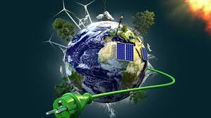
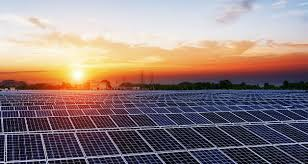
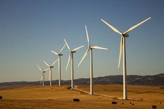
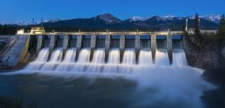
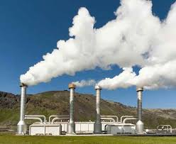
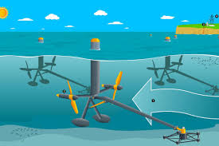
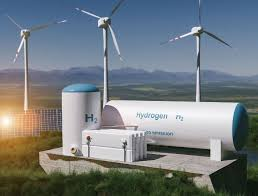
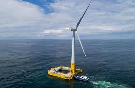
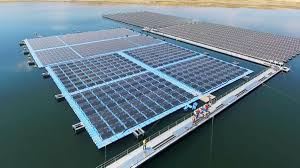
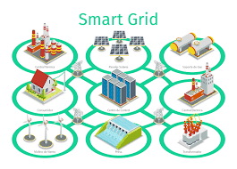

Guía de Energías Renovables
Descubre cómo las fuentes limpias están transformando el planeta
¿Qué son las energías renovables?
Las energías renovables son fuentes de energía que se obtienen de recursos naturales inagotables o que se regeneran rápidamente, como el sol, el viento, el agua, la biomasa y el calor terrestre. A diferencia de los combustibles fósiles, su uso no agota los recursos ni emite grandes cantidades de contaminantes, lo que las convierte en una opción clave para la sostenibilidad energética.
Tipos de energía renovable
Energía Solar
Fotovoltaica: Convierte la luz solar directamente en electricidad mediante paneles solares. Térmica: Utiliza el calor del sol para calentar agua o aire, aplicable en sistemas de calefacción y agua caliente sanitaria. Energía Eólica
Aprovecha el viento para generar electricidad mediante aerogeneradores. Es especialmente eficaz en zonas con vientos constantes.
Energía Hidroeléctrica
Utiliza el flujo de agua, generalmente de ríos o embalses, para mover turbinas que generan electricidad. Es una de las fuentes más establecidas y confiables.
Energía geotérmica
Aprovecha el calor interno de la Tierra para generar electricidad o calefacción. Es especialmente útil en regiones con actividad volcánica o geotérmica.
Energía mareomotriz y undimotriz
Mareomotriz: Aprovecha el movimiento de las mareas para generar electricidad.
Undimotriz: Utiliza el movimiento de las olas del mar para generar energía. Ambas tecnologías están en fases de investigación y desarrollo. Beneficios
- Reducción de emisiones contaminantes: Disminuyen la emisión de gases de efecto invernadero, contribuyendo a la lucha contra el cambio climático.
- Conservación de recursos naturales: Al utilizar fuentes inagotables, se reduce la presión sobre recursos no renovables como el petróleo y el gas natural.
- Mejora de la calidad del aire: Al no generar contaminantes atmosféricos, mejoran la salud pública y reducen enfermedades respiratorias.
- Reducción de costos a largo plazo: Aunque la inversión inicial puede ser alta, los costos operativos y de mantenimiento son generalmente bajos.
- Creación de empleo: Generan puestos de trabajo en sectores como la fabricación, instalación y mantenimiento de infraestructuras de energía limpia.
- Seguridad energética: Reducen la dependencia de fuentes externas de energía, aumentando la estabilidad energética y política de los países.
- Acceso a la energía: Proporcionan electricidad a comunidades sin acceso a la red eléctrica, mejorando la educación, salud y calidad de vida.
- Estimulación de la economía local: Fomentan el desarrollo económico en comunidades rurales y aisladas, mejorando su infraestructura y calidad de vida.
Innovacion
Hidrógeno verde
El hidrógeno verde, producido mediante electrólisis del agua utilizando electricidad de fuentes renovables, se posiciona como una solución clave para descarbonizar sectores difíciles de electrificar, como la industria pesada y el transporte marítimo. Proyectos piloto y avances tecnológicos están allanando el camino para su adopción masiva. Eólica flotante
La energía eólica flotante permite instalar turbinas en aguas profundas, donde los vientos son más fuertes y constantes. Esta tecnología está marcando la diferencia, ya que reduce el impacto ambiental y visual, y permite aprovechar zonas marinas más alejadas de la costa. Energía solar flotante
La instalación de paneles solares en cuerpos de agua, conocida como energía solar flotante, está ganando terreno como una solución innovadora para aprovechar espacios no utilizados y aumentar la capacidad de generación sin competir por terrenos valiosos. Redes eléctricas inteligentes (Smart Grids)
Las redes eléctricas inteligentes utilizan tecnologías digitales para gestionar la distribución de energía de manera más eficiente, reduciendo pérdidas y mejorando la fiabilidad del sistema. Facilitan la integración de fuentes renovables y permiten una gestión más flexible y dinámica de la demanda y oferta energética. Proyectos y Perspectivas Futuras
Aunque la implementación de proyectos de energías marinas en México aún está en fases iniciales, el país cuenta con características geográficas y oceanográficas que podrían facilitar su desarrollo. Por ejemplo, la corriente de Yucatán es una de las más atractivas para la extracción de energía, debido a su velocidad y constancia .
En el ámbito internacional, países como Noruega y Japón han avanzado significativamente en la implementación de tecnologías de energía eólica flotante y aprovechamiento de corrientes marinas. México podría beneficiarse de estas experiencias y adaptarlas a sus condiciones locales.